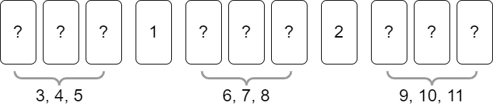
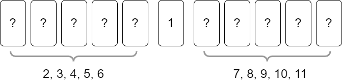
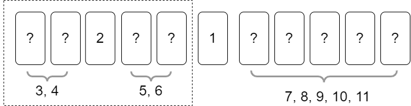

顺序翻牌策略问题
现有\(n\)名玩家参与一个翻牌游戏，每人编号为\(0, 1, \dots, n -1\)。游戏中共有\(m\)张牌，这些牌的正面分别印有数字\(1, \dots, m\)。初始时，它们的顺序被随机打乱，背面朝上在桌上排成一个序列。从\(i=1\)开始，第\(i\)轮，编号为\(i \ \text{mod} \ n\)的玩家依次执行如下操作：
- 查看桌面上的牌的状态\(S_i\)。记已被翻开的牌的最大数字为\(k_i\)，若无牌被翻开，则记\(k_i = 0\)。
- 选择一张未被翻开的牌，将其翻开，若
- 此时翻开的牌的数字为\(k_i + 1\)，则可以将其正面朝上或背面朝上插入序列的任意位置。进一步地，若\(k_i + 1 = m\)，则游戏结束。
- 否则，可以将其背面朝上插入序列的任意位置。
- 离开桌面。
在游戏中，每名玩家只能在轮到自己时才可以查看桌面上的牌的状态，无法获知其他玩家在各自的轮次的操作，也无法直接告知其他玩家任何信息。只有在开始游戏之前，这\(n\)名玩家才能进行讨论。
记\(X_{n,m}\)为直到游戏结束，总的翻牌次数。游戏的目标是让\(X_{n,m}\)尽可能小。
问：
- 求\(E(X_{1, m})\)。
- 若所有玩家“各自为战”，且\(n\)远大于\(m\)，求\(E(X_{\infty,m})\)。
- 在\(n\)较小时，以及\(n\)很大时，分别制定一个策略，尽可能最小化\(E(X_{n, m})\)。
变体：
- 游戏中可以随意交流（所有情况变成\(X_{1,m}\)）
- 不需要维持牌是一个序列，可以将牌摆成任意形状，摆到桌面上的任意位置（所有情况变成\(X_{1,m}\)）
- 翻出牌后，不能改变其在序列中的位置（当\(n\)很大时，所有玩家只能“各自为战”，无法制定策略）
- 翻出牌后，可以随意改变整个序列中任意牌的位置，但不能再翻牌（情况更加复杂，应该可以制定相同时间复杂度但常数更小的策略）
解答
记每次正面翻出的数字为\(k_i+1\)的牌为接续牌。
线性翻牌，即让\(m\)个人翻\(m\)张不同的牌的策略可以如下进行：每人都只翻最左侧（最前）的牌，无论翻到什么牌，都将其置入序列的最右侧（末尾）。
当只有一个玩家时，他的策略是简单的：
- 第一趟，线性翻出每张牌，记下每张牌的数字。注意，最后一张牌不需要被翻出，因为前\(m-1\)张牌的数字分布唯一决定了最后一张牌的数字。
- 第二趟，根据记下的数字顺序翻出每张接续牌。
该策略的最优性是显然的。
如果第一趟翻出的牌恰好能够正面翻出，那么就可以减少第二趟翻牌的次数。一般地，记\(Y_i\)为在此情况下，第\(i\)张牌被翻出的次数，则\(X = \sum_{i=1}^m Y_i\)，\(Y_i\)的取值范围为\(\{1,2\}\)。\(\forall i \in [1, m-1]\)，
\[ E(Y_i) = 1 \cdot \frac{1}{m - i + 1} + 2 \left(1 - \frac{1}{m-i+1} \right) = 2 - \frac{1}{m-i+1}. \]
而\(E(Y_m) = 1\)。故
\[ E(X) = \sum_{i=1}^{m-1} E(Y_i) + E(Y_m) = 2(m-1) - (H_m - 1) + 1 = 2m - H_m. \]
这是个很漂亮的结论。
在所有玩家“各自为战”，且且\(n\)远大于\(m\)的假设下，每个玩家只能被轮到一次，且其轮次只能获取场上已被翻出的牌的信息。由对称性，此时有\(E(Y_i) = i\)。故\(E(X) = \frac{m(m+1)}{2}\)。
该问题的开放程度很高，直接给出最优策略及其证明相当困难，在此先给出几个策略，并逐一分析它们的特点：
区间负责策略
当\(n\)较小时，有一个比较显然的\(O(nm)\)的策略，描述如下：
不失一般性，设\(m\)能被\(n\)整除。考虑让每个人负责长度为\(\frac{m}{n}\)的区间的牌：
- 第一趟，线性翻出每张牌，其中每个玩家只负责翻自己的\(m/n\)张牌。总翻牌次数为\(m\)。这一趟至少可以翻出一张牌，其数字为\(1\)。
- 第\(j \ (j \in [2, m])\)趟，对每个玩家，若自己负责的区间有接续牌，则翻出之，否则可以随意翻出后续玩家负责的区间中的一张牌。我们近似认为这个随意翻牌的操作不影响翻牌推进。每翻出一次接续牌，令\(j = j+1\)。如此翻牌直到游戏结束。
对每个第\(j\)趟，我们近似认为，每个玩家的区间有接续牌的概率均等为\(\frac{1}{n}\)。记在第\(j\)趟还有\(n\)名玩家没翻过牌时，直到翻出接续牌，所需的翻牌次数的数学期望为\(s_n\)，则\(s_n = \frac{1}{n} + \frac{n-1}{n}(s_{n-1} + 1)\)，初值条件为\(s_1=1\)，解得\(s_n = \frac{n+1}{2}\)。故此方案的\(E(X)\)满足不等式
\[ E(X) \leq m + \frac{n+1}{2} \cdot (m-1). \]
可以证明，上式取等号当且仅当\(n=m=1\)。由于该方案未在翻出牌后改变其在序列中的位置，故仍然有很大的改良空间。
从最前往最后放策略
当\(n\)很大时，有一个比随机选择更好（常数更小）的\(O(m^2)\)策略，只要每次都翻出最左侧未翻开的牌，并将其放至最右侧，就可以保证每张牌不会被过多地重复翻出。在实际团建游戏中，综合考虑轮数和简洁，以及\(m \leq 13\)，这个策略是最实用的。
策略描述非常简单：每名玩家总是翻开最左侧的未翻开的牌，若其是接续牌，则将其正面朝上放至最右侧，否则将其背面朝上放至最右侧。
\(E(X)\)的计算也是简单的：记从背面朝上的牌恰有\(i\)张开始，至恰有\(i - 1\)张为止，所需的翻牌次数的数学期望为\(s_i\)，则\(s_n = \frac{1}{n} + \frac{n-1}{n}(s_{n-1} + 1)\)，初值条件为\(s_1=1\)，解得\(s_n = \frac{n+1}{2}\)。故
\[ E(X) = \sum_{i=1}^m s_i = \frac{m(m+3)}{4}. \]
最坏情况下，仍需要\(\frac{m(m+1)}{2}\)次翻牌。
均匀分割策略
当\(n\)很大时，有一个\(O(m \sqrt m)\)的“均匀分割策略”。
当\(n\)很大时，每个玩家只能被轮到一次，我们考虑如何让前人为后人留下信息。由于场面上最显然的就是已被翻出的牌，一个简单的想法是，让这些正面朝上的牌充当区间的划分点，各区间等量地分布着一些连续的牌。我们只需要在第一趟把区间端点的牌找出并摆至相应的端点位置，后人只需将他们翻到的牌置入相应的区间即可。
对\(m=11\)的场合，当我们已经将数字\(1,2\)翻出，并让它们作为区间端点后，此时的示意图如下：

即，后续我们只需将\([3,5], [6,8], [9,11]\)这些区间的牌按照顺序翻出即可。
形式化地，首先，我们指定区间长度参数\(l\)的值。不失一般性，设正整数\(l\)满足\((l - 1) + l^2 = m\)（在上例\(m=11\)时，\(l=3\)）。考虑\(1,2,\dots, l-1\)作为区间端点，我们需要为\(l, l + 1, \dots, m\)的每一个数字分配一个区间。记在长度参数为\(l\)时，第\(j\)个区间为
\[ I_{l,j} = [jl, (j+1)l - 1], \]
即，第\(1\)个区间为\([l, 2l - 1]\)，最后一个区间为\([l^2, (l+1)l - 1] = [l^2, m]\)，可见区间数目与区间长度相等。当\(m=11\)时，共有\(l=3\)个区间，第\(1\)个区间为\([3,5]\)，最后一个区间为\([9,11]\)；这些区间由正面朝上的的牌作为端点划分，如上图所示。
我们的策略如下描述：
- 端点扫描阶段。线性翻牌，翻出端点牌\(1, \dots, l-1\)，然后依照顺序置于序列末尾。可以证明\(l - 1 < \sqrt m\)，故这一趟所需翻牌次数 \(\leq (l-1)m < m \sqrt m\)。
- 区间置位阶段。线性翻出所有未翻出的牌，将它们置于相应的区间内。为了避免后人多次翻出重复的牌，我们规定，在置入区间时，置入区间端点所在处的左s侧或右侧。这一趟所需翻牌次数为\(m-l+1\)。
- 区间扫描阶段。对\(l\)个区间，依次进行相当于\(m=l\)的翻牌游戏，这一翻牌游戏共进行\(l\)次。即便我们只使用最简单的随机翻开的方法，翻牌次数期望也只有\(\frac{l(l+1)}{2} = \frac{m+1}{2}\)，故总翻牌次数期望为\(\frac{l(m+1)}{2} < \frac{(\sqrt m + 1)(m+1)}{2} = O(m\sqrt {m})\)。
因此这是一个\(O(m \sqrt m)\)的策略。
分治策略
当\(m\)很大时，有一个与快速排序思想极其相似的\(O(m \log m)\)的分治策略。
“均匀分割策略”还有很多可改进的空间。如果我们能够让正面朝上的牌平均分割两个区间，然后对这两个区间递归地解决子问题，就能达到更优的复杂度。具体描述如下：
- 线性翻牌，在此过程中，正面朝上翻出端点牌\(1\)，并置于序列末尾。这一趟所需翻牌次数不大于\(m\)。
- 再次线性翻牌，将数字为\(2, \dots, \lceil \frac{m}{2} \rceil\)的牌背面朝上置于端点牌\(1\)左侧，将\(\lceil \frac{m}{2} \rceil + 1, \dots, m\)置于右侧（在此过程中，即便已经可以将\(2\)翻出并置于\(1\)的末尾，为下次递归省出一步，但不必这么做，我们统一背面朝上放牌）。这一趟所需翻牌次数不大于\(m\)。
- 递归地，先处理左侧序列\(2, \dots, \lceil \frac{m}{2} \rceil\)（规模为\(\lceil \frac{m}{2} \rceil - 1\)的子问题），再处理右侧序列\(\lceil \frac{m}{2} \rceil + 1, \dots, m\)（规模为\(m - \lceil \frac{m}{2} \rceil\)的子问题）。当子问题规模为\(1\)时，此时该牌必为接续牌，直接翻开即可。
当\(m=11\)时，完成第一次区间划分后的情况如下图所示：

随后，完成对左侧子问题的第一次区间划分后的情况如下图所示：

整体时间复杂度计算方法为\(T(m) = 2m + 2 T(\frac{m}{2})\)，其中\(T(1) = 1\)。解得\(T(m) = 2m \log_2 m + m\)。因此\(E(X) \leq m(2\log_2m + 1)\)，取等当且仅当\(m=1\)。因此这是一个\(O(m \log m)\)的策略。该策略的最坏情况时间复杂度为\(O(m \log m)\)，平均时间复杂度为\(O(m \log m)\)，最好情况时间复杂度为\(m\)。
所有\(n\)很大的策略都适用于任意\(n\)的策略。因此，即便在\(n\)不大时，也可以考虑使用这个分治策略，因为它实在是太漂亮了。经过实验，对\(m > 13\)的情况，该策略的平均表现优于“从最前往最后放策略”。
感觉\(O(m \log m)\)已经是最优的情况了。是否可以证明这一结论呢？待填坑。
代码示例
项目地址： https://github.com/MercuryGH/sequence-card-flip-game
API说明：
table.query_flipped(index): 得到当前桌上第index张牌是否正面朝上。table.query_val(index): 得到当前桌上第index张牌的数字。对正面朝上的牌，可反复调用；对背面朝上的牌，每轮只能调用1次。table.flip_queried_card(): 在某轮中，对背面朝上的接续牌调用过table.query_val()后，将那张牌翻成正面朝上。不能在调用完table.replace_queried_card()后调用。table.replace_queried_card(index): 在某轮中，对背面朝上的牌调用过table.query_val()后，将那张牌抽出后，重新置于序列的第index个位置。
1 | /** |